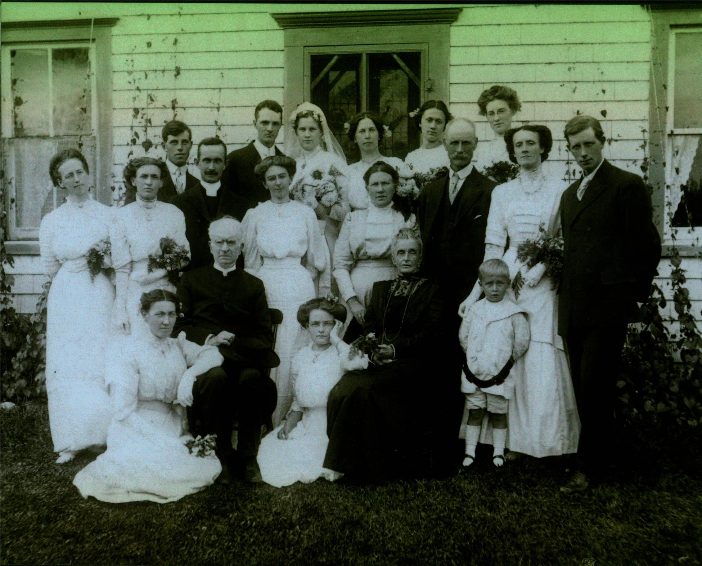

The Family Chronicle
No. 49 October 10, 2003

I am grateful to Cameron MacDonald for providing a copy of the above photo which was taken, we believe in 1912 or 1913. The photo was taken at the wedding of Elspeth MacDonald and Ernest Holloway. The photo was not labeled but Cameron has identified people as:
Back row: Hugh (Mac) MacDonald killed while working on the Morrissy (Newcastle) bridge in 1914, Man in front of Mac thought to be a student minister, Ernest Holloway, Elspeth MacDonald, Isabel MacDonald, Frances MacDonald, Vada MacDonald.
Middle Row: Annie MacKnight, Catherine MacKnight, Unknown, Mrs Kenneth MacDonald, Kenneth MacDonald, Ethel (MacTavish) MacDonald, Alexander MacDonald
Front row: Unknown, Rev. Grant, Unknown, Mrs. Grant, Weldon MacDonald.
My Grandmother, Grace (MacDonald) Watling was a sister to Kenneth MacDonald shown above. Kenneth MacDonald, after whom Ken’s Hill is named, lived on the property where Cameron MacDonald now lives. Catherine (McGraw) MacDonald was known affectionately as “Aunt Kate Ken”. Please help identify the people in the photo.
Descendants of Kenneth MacDonald
1 Kenneth MACDONALD 1852 - 1927
.. +Catherine Eliza MCGRAW 1852 - 1931
......... 2 Alexander Enoch MACDONALD 1878 - 1947
............. +Beatrice M SHUTTLEWORTH 1884 - 1957
......... *2nd Wife of Alexander Enoch MACDONALD:
............. +Ethel Jane MACTAVISH 1885 - 1933
.................... 3 Kenneth Weldon MACDONALD 1907 - 1941
........................ +Margaret CAMERON 1909 - 1950
............................... 4 Kenneth A MACDONALD 1930 -
................................... +Margaret GORDON
........................................... 5 Weldon MACDONALD 1958 -
............................................... +DEBBIE
...................................................... 6 Charles MACDONALD
...................................................... 6 Jamie Lee MACDONALD
........................................... 5 Maureen MACDONALD 1960 -
............................... *2nd Wife of Kenneth A MACDONALD:
................................... +Exelda HEBERT 1938 -
........................................... 5 Darren MACDONALD 1962 -
............................................... +Kelly DOYLE
...................................................... 6 Kaleb MACDONALD
...................................................... 6 Isaiah C MACDONALD
........................................... 5 Jeannie MACDONALD 1970 -
............................................... +William MACGILLIVARY
...................................................... 6 William Kenneth MACGILLIVARY 2003 -
............................... 4 Cameron MACDONALD 1933 -
................................... +Nan C MACRAE 1934 -
........................................... 5 Margaret I MACDONALD 1955 -
............................................... +Charlie PALMER 1954 -
...................................................... 6 John P S PALMER 1981 -
...................................................... 6 Travis J PALMER 1984 -
........................................... 5 John F MACDONALD 1962 -
............................................... +Eileen Lynn THERIAULT 1961 -
...................................................... 6 John Alexander MACDONALD 1987 -
...................................................... 6 Connor Ian Peter MACDONALD 1989 -
........................................... 5 Norma E MACDONALD 1962 -
............................................... +R Michael SKIDD
...................................................... 6 Ryan M SKIDD 1997 -
........................................... 5 Jeffery MACDONALD 1970 -
............................................... +Kimberley RICHARD 1974 -
............................... 4 Maxine MACDONALD 1939 -
................................... +John G DONOVAN 1939 -
........................................... 5 Garry DONOVAN 1959 -
............................................... +Darlene GALLANT 1960 -
........................................... 5 Carol DONOVAN 1960 -
............................................... +Frank MCGURK
...................................................... 6 Lyon F MCGURK 1992 -
...................................................... 6 Girl MCGURK
........................................... 5 Erin DONOVAN 1962 -
............................................... +GLINNDENNING
........................................... *2nd Husband of Erin DONOVAN:
............................................... +Greg PARTON
...................................................... 6 Melody PARTON 1994 -
........................................... 5 Cameron DONOVAN 1966 -
............................................... +Jacqueline RUSSELL
...................................................... 6 Russell DONOVAN 1995 -
...................................................... 6 Mitchell DONOVAN 1997 -
............................... *2nd Husband of Maxine MACDONALD:
................................... +Frederick STOKER 1931 -
.................... 3 Maxine MACDONALD 1916 - 1935
......... 2 Frances Jane MacDougall MACDONALD 1886 - 1957
......... 2 Nevada MacKenzie MACDONALD 1884 - 1960
......... 2 Isabel Evelyn MACDONALD 1880 - 1970
......... 2 Hugh (Mac) G MACDONALD 1888 - 1914
......... 2 Elspeth M MACDONALD 1882 - 1966
............. +Ernest HOLLOWAY
......... 2 John William MACDONALD